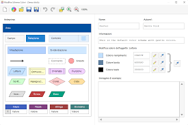

Vai all'indice
Vai al capitolo 3
Naviga all'interno del CAPITOLO 4...
Flowgorithm
Codifica
Flowgorithm
Si tratta di uno strumento di programmazione grafico che consente agli utenti di scrivere ed eseguire programmi utilizzando diagrammi di flusso. Il programma è progettato per enfatizzare l'algoritmo piuttosto che la sintassi di uno specifico linguaggio di programmazione. Il diagramma di flusso può essere convertito in diversi linguaggi di programmazione principali.

Codifica
Rappresentazione digitale dei dati. In altri termini, un dato viene rappresentato tramite una codifica, o codificato. Il dato codificato è rappresentato tramite simboli per essere immagazzinato, trasmesso, o elaborato dal computer. Le informazioni sono codificate in varie forme - come testo, immagini, audio e video - e vengono utilizzati sistemi specifici per rappresentare il contenuto delle informazioni.
Vai al capitolo 5